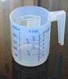

volume
property

Source: Wikipedia
Wikipedia Page (Something wrong with this association? Let us know.)
Wikidata Page (Something wrong with this association? Let us know.)
Occurs in:
- atmosphere_hydrometeor__volume
- automobile_engine__volume
- automobile_engine_cylinder__volume
- automobile_fuel-tank__volume
- automobile_fuel__volume
- automobile_fuel-tank__volume
- channel_water__time_derivative_of_volume
- channel_water__volume
- river-delta__volume
- river-delta~subaerial__volume
- river-delta~subaqueous__volume
- earth__volume
- earth_atmosphere__volume
- glacier_ice__change_from_one-year_min_of_volume
- glacier_ice__time_derivative_of_volume
- glacier_ice__volume
- model_grid_cell_water__time_derivative_of_volume
- sea_ice__time_derivative_of_volume
- sea_ice__volume
- snowpack_core__volume
- storage-tank~open-top_water__volume
- automobile~toyota~corolla~2008_engine__volume
- automobile~toyota~corolla~2008_fuel-tank__volume
- model_grid_cell_water__volume
- model_grid_dual-cell_water__volume
- model_grid_primary-cell_water__volume